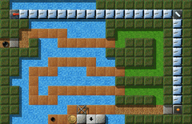
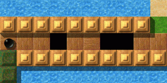
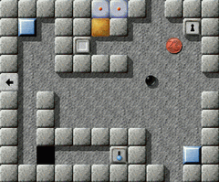
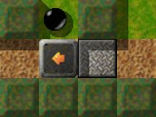
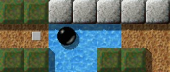
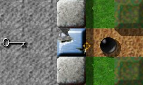
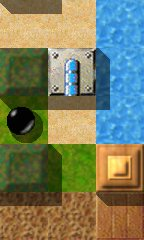

Level des MonatsJeden Monat werfen wir einen näheren Blick auf einen herausragenden Level. Herausragende Levels sind dabei solche, die sich durch die höchsten Bewertungen durch die Spieler auszeichnen, und dabei zugleich von genügend vielen Spielern auch bewertet wurden. Es ist also Ihre Wahl, die den Level des Monats bestimmt. Bitte werten Sie Levels, nachdem Sie sie gespielt haben, und vergessen Sie nicht, die Wertungen zusammen mit Ihren Spielergebnissen zum Ende eines jeden Monats uns zuzusenden. Sie können alle vorigen Level des Monats in unserem Archiv finden. September 2008: „River of Challenges“ von Lukas SchüllerSommerzeit ist auch Urlaubszeit. Tja, haben Murmeln denn auch Urlaub? Und wenn ja, was machen sie dann? Faulenzen und sich verwöhnen lassen oder doch lieber Aktivurlaub? Fragen über Fragen. Zum Glück ist Lukas Schüller diesen Fragen nachgegangen und erlaubt uns, mit „River Of Challenges“ einen Einblick in seine Erkenntnisse zu bekommen.

Enigma VI # 61
Eigentlich wollte unsere Murmel dieses Jahr zum Bergsteigen, aber die vorherrschende Großwetterlage im Gebirge machte ihr leider einen Strich durch die Rechnung. Ans Meer? Naja, als Nichtschwimmer (man soll's nicht glauben, aber es ist so) ist das auch nicht so prickelnd, und dort am Ende noch in irgendeiner anonymen Touri-Hochburg nur abhängen? Gestrichen! Also was? Die Altvorderen haben, wenn ihnen die Ideen ausgingen, ein Orakel befragt. Das half einem dann schon weiter. Umhören und fragen schadet auch heutzutage nicht. Nach etwas Recherche an den richtigen Stellen stößt unsere Murmel bald auf ein interessantes Fleckchen im Süden — nur Insidern bekannt und von diesen mit glänzenden Augen als „echt geile Location“ gelobt. Da fällt einem die Entscheidung leicht. „Süden“ bedeutet im Sommer warmes und stabiles, gutes Wetter, „nur Insidern bekannt“ Ursprünglichkeit und keinen Rummel. Damit ist eine Alternative gefunden.

Unpassierbare Brücke
An unserem Urlaubsziel angekommen, wird zunächst die Lage sondiert. Den von den Insidern angesprochenen Fluss, der sich hervorragend zum Kajaken bzw. Rafting eignen soll, sehen wir schon in der Ferne. Also gleich mal überprüfen, ob er den Schwärmereien gerecht wird. Wow! Die haben ja ein Rad ab, das Ding zu befahren, ist reiner Selbstmord. Armdicke Äste, sogar Baumstämme schießen vorbei. Gehen wir mal über die Brücke und sehen auf der anderen Seite nach: Vielleicht ist es dort ruhiger. Upps, der Weg ist wohl nicht passierbar! Anscheinend gab es hier kürzlich ein Hochwasser, das die Brücke demoliert hat, deswegen auch der ganze Schlamm und Matsch.

Die Ortschaft
Da werden wir uns in der naheliegenden Ortschaft erst einmal informieren, was passiert ist und wann die Reparaturarbeiten abgeschlossen sein werden. Leider sind die Auskünfte, die wir dort erhalten, alles andere als aufmunternd: Die Arbeiten werden sich noch Tage, wenn nicht Wochen hinziehen. Wir sollen doch nächstes Jahr wieder kommen oder uns mit dem begnügen, was im Ort geboten wird, heißt es. Zumindest erfahren wir, dass drei Leute uns eventuell weiterhelfen können. Allerdings seien zwei von denen momentan wohl verhindert oder zu beschäftigt, und der Weg zum dritten sei zur Zeit mehr als abenteuerlich. Verzagte Gemüter würden jetzt die Koffer packen, aber wir wollten ja Aktivurlaub — also stellen wir uns den Herausforderungen. Zum Warmwerden nehmen wir uns für den heutigen Tag die Brücke südöstlich der Ortschaft vor. Wider Erwarten lässt diese sich doch ohne größere Probleme wieder instandsetzen. Damit ist der Weg zu zwei „Sehenswürdigkeiten“ frei. Um unser Pulver nicht zu früh zu verschießen, lassen wir es für heute dabei bewenden. Morgen ist ja auch noch ein Tag. Verpassen Sie nicht den letzten „Bus“!Im Januar 1995 habe ich den Ruinen der antiken Stadt Petra in
Jordanien einen Besuch abgestattet. Mein Reisegefährte und ich hatten an
einer Stelle wohl die falsche Abzweigung genommen, und wanderten nun an den
Ufern eines Flusses entlang weg von der Augrabungsstätte hinaus in die
Wildnis. Auf einmal waren wir nicht länger von Säulen umgeben, einst
vor langer Zeit von Menschenhand aus totem Stein gehauen und zu etwas Lebendigem
geformt, sondern nur noch von den Schöpfungen von Mutter Natur selbst.
Wir folgten dem Lauf des Flusses weiter, bis wir an eine
Seilbrücke gelangten. Wir waren uns im Klaren darüber, dass unser Bus
bald abfahren würde, und da wir uns mittlerweile doch ein gutes Stück
von unserem Ausgangspunkt entfernt hatten, konnten wir nicht sicher sein, ob wir
den Bus überhaupt noch rechtzeitig erreichen würden, der zudem noch
der letzte für den damaligen Tag war. Wir mussten also diese prekäre
Seilbrücke zum einen mit äußerster Vorsicht überqueren, um
nicht hinab ins Wasser zu stürzen, und zum anderen mit der gebotenen Eile,
um nicht den Bus zu verpassen.

Den Bus verpasst.
Dies ist die Erinnerung, die „River of Challenges“
in mir auslöst. Wie es bei vielen Enigma Leveln der Fall ist, so gibt es
auch hier eine kritische Aufgabe, die man gleich zu Beginn meistern muss, will
man das Spiel weiter fortsetzen. In diesem Level ist es die notwendigerweise
rasche aber zugleich auch vorsichtige Überquerung des Flusses, die man
unternehmen muss, um den Laser abzuschalten, bevor der Laserstrahl den Boulder
erreicht. Wenn man den „Bus“ verpasst, bleibt einem nichts anderes
übrig, als das Spiel wieder von vorne zu beginnen.
Für mich allerdings war die größte
Herausforderung nicht etwa diese verrückte Rennerei über den Fluss,
auf die ich eben angespielt habe, sondern das Springbrettgehüpfe in dem
Raum unten links, das man veranstalten muss, um an den Schalter zu gelangen. Ich
finde es ziemlich schwierig, die richtige Anlaufgeschwindigkeit zu finden, um
dann mit dem richtigen Schwung über die Bächlein hinüber gefedert
zu werden. Meistens versuche ich mit einem riesigen Satz beide Gewässer zu
überqueren, in der Hoffnung den Schalter zu erwischen, bevor ich wieder von
der Wand zurückpralle, ins Wasser stürze und dabei ein Leben verliere.
Mir gefällt der Level wirklich ausgesprochen gut —
er macht optisch einen prächtigen Eindruck. Die Aufgaben, die
bewältigt werden müssen, sind abwechslungsreich — und auch die
für den Erfolg erforderlichen Maße an Geschicklichkeit auf der einen,
sowie an Vorausdenken auf der anderen Seite sind wohl ausgewogen. Von mir
erhält „River Of Challenges“ eine „10“.
Am nächsten Tag schauen wir mal, wie es mit der Hilfe aussieht. Der Erste, den wir aufsuchen, scheint selbst Hilfe zu benötigen. Bestückt mit einem Gips am Bein schlägt uns B.B. Marble einen Handel vor. Vor seinem Unfall habe er etwas Wichtiges verloren, das er sich aufgrund seiner nun eingeschränkten Bewegungsfreiheit nicht holen könne. Wenn wir ihm dies wiederbeschaffen könnten, würde er sich selbstverständlich erkenntlich zeigen. Wir sind einverstanden und das Angebot wird mit Handschlag besiegelt. Er instruiert uns noch genau, wo wir hin müssen und was uns auf dem Trip erwarten wird — und dass Eile geboten ist. Na dann mal los. Rein in die Sportklamotten und raus aus dem Ort, ab in östlicher Richtung. Anfangs eiern wir noch wegen des Schlamms ein wenig durch die Gegend (hoffentlich haben wir dadurch nicht zu viel Zeit verloren!), aber bald können wir — nein, müssen wir — Tempo aufnehmen — soweit es uns eben die verschlungene Holzbohlen-Konstruktion erlaubt. Bloß kein Fehltritt, konzentriert bleiben und das Tempo halten. Geschafft! Das war knapp! Erst mal verschnaufen, und dann das schwer erkämpfte „Fundstück“ abliefern. Und wie versprochen — manus manum lavat — lässt B.B. seine Beziehungen spielen, und bald darauf sind wir einen Schritt (i.e. ein fl-bridge-closed) weiter. Feierabend für heute.

„Schwingen“ über den Tümpel
Am folgenden Morgen machen wir uns auf zum nächsten Hilfsbereiten. Big Bill Marble würde uns ja gerne helfen, wozu er aber einen Schlüssel benötige, seinen „Key to the Highway“ wie er das gute Stück nennt, den er bei seiner letzten Rock'n'Roll Show im Musiktheather „Die Höhle“ westlich der Ortschaft vergessen habe, meint der gute Mann. Na toll! Wenigstens liegt „Die Höhle“ auf dem Weg zu demjenigen, der uns als dritte Anlaufstelle für Unterstützung genannt wurde. Wohlweislich rüsten wir uns für den „Höhlentrip“ entsprechend aus. Zunächst geht's zum westlichen Ortsausgang raus, um dann sofort nach Süden abzuschwenken. Die reinste Rutschbahn ist das. Tja, doch dann ist unser weiterer Weg durch einen Tümpel versperrt. Da kommen wir nur mit dem richtigen Schwung drüber. Es ist nur zu hoffen, dass wir auf der anderen Seite wegen des Schlamms nicht die Kontrolle verlieren. Na dann … Uff, gerade noch mal gut gegangen. Und weiter. Schon sind wir bei der „Höhle“ angekommen, und nachdem auf unser Klopfen niemand reagiert, schlagen wir kurzerhand die Tür ein und nehmen den verlorengegangenen Schlüssel an uns. Südlich der „Höhle“ biegen wir nach Westen ab, um den Dritten auf unserer Liste aufzusuchen. Im Folgenden versuchen uns zwei Bäche am erfolgreichen Weiterkommen zu hindern. Doch mit dem richtigen Schwung und der nötigen Präzision meistern wir auch dieses Hindernis. „Tut mir furchtbar leid, aber da kann ich beim besten Willen nicht weiterhelfen,“ ist zunächst alles, was wir von Little Walter Marble ernten. „Fragt mal heute Abend in der Kneipe nach, die sich am Ende der Seitengasse südlich des Marktplatzes befindet. Sagt, dass ich euch geschickt habe. Everything's gonna be alright.“ Was auch immer das bedeuten mag, mit diesem nicht gerade erfolgversprechenden Ratschlag machen wir uns auf den Rückweg in die Ortschaft.

Die Höhle: Big Bills verlorener Schlüssel
Kneipe wäre heute sowieso angesagt gewesen, warum also der besagten Lokalität keinen Besuch abstatten? Gesagt, getan. Auf unsere Fragen hin werden wir zunächst vertröstet: Derjenige, der uns weiterhelfen könne, käme erst etwas später. Wir machen es uns gemütlich. Mit dem süffigen Landwein haben wir schnell Freundschaft geschlossen, das Essen ist ebenfalls gut, die Stimmung passt. Da macht sogar das Warten Spaß. Irgendwann später trifft auch der von uns Erwartete ein und gesellt sich kurz darauf zu uns. Auf seine Frage, was wir denn von ihm wollten, klären wir ihn über unsere Probleme auf. Bei einigen (oder doch mehreren?) Gläschen sichert uns John Lee Marble seine Unterstützung zu und gibt uns noch einige hilfreiche Tipps. Was dann noch kommt … „Der Frustfaktor bei “River of Challenges„ ist vergleichsweise gering“„River of Challenges“ ist recht übersichtlich
gestaltet, so dass man den ganzen Level anschauen kann, ohne richtig loszulegen.
Gleichzeitig hat man ein wenig Freiheit dabei, in welcher Reihenfolge man die
einzelnen „Herausforderungen“ angeht, so dass es sich auch für
ungeübte Spieler lohnt, hier einmal hineinzuschnuppern. Wenn man den Level
lösen will, muss man aber sowohl etwas Geschick beim Steuern der Kugel
haben, als auch ein wenig logisch denken können, um bei den
Verschieberätseln keine Fehler zu machen.
Zum Glück kann man eine der kritischsten Stellen,
nämlich den Wettlauf mit dem Laserstrahl gleich zu Beginn erledigen, so
dass der Frustfaktor bei „River of Challenges“ vergleichsweise gering
ist. Auch die Lösung der Denkaufgaben erfordert keine Geniestreiche, wenn
man mal von zwei „Stolperfallen“ absieht, mit denen ich mich lange
herumgeplagt habe:
1) Wo bekomme ich mehr Dynamit her, um den Raum mit dem
Schlüssel freizusprengen?
2) Warum komme ich nicht weiter, wenn ich im oberen Teil des
„Flusses“ (analog zu unten rechts) eine Brücke baue?
Irgendwann erreicht man dann (hoffentlich) einen Punkt, an
dem man jeden einzelnen Teil des Levels (wenigstens theoretisch) im Griff hat.
Dann ist es nur noch eine Frage der Zeit?
Oh Gott, warum ist es heute Morgen nur so hell, und warum ist mein Kopf so schwer? Ach ja, gestern abend, oder war das schon heute morgen, sind wohl ein 'bisschen' verhockt? So wie es uns momentan geht, kann — nein, muss — das nur ein paar Stunden her sein. Egal. Dann wird heute einfach eine Pause eingelegt. — Halt, da war doch noch was. — Wenn wir uns nur nicht so mies fühlen würden. — Hatten wohl „einen Bourbon, einen Scotch, ein Bier“ oder was auch immer zu viel? — Was war da nochmal? — Eigentlich wollten wir heute … die Brücke … die „Sehenswürdigkeit“ nordöstlich der Stadt … Genau! Aber sollen wir uns das heute wirklich antun? Naja, nachdem die Leute sich so für uns eingesetzt haben, können wir die jetzt schlecht enttäuschen. Wird schon nicht so schlimm werden. Nach einer Kanne Kaffee, aber immer noch nicht ganz so fit, begeben wir uns gemächlich an den heutigen Ort des Geschehens.

What shall we do
with the stuff from the river? … early in the mornin' … Super, die nördliche Brücke ist wieder benutzbar. Bis auf den matschigen Weg sieht die anderen Seite echt okay aus. Doch halt, was ist denn das? Kurz vor unserem Ziel ist alles meterhoch überflutet. — Hatte unser gestriger Zechkumpan John Lee nicht irgendwann erwähnt, dass in der Nähe genügend Zeug rumliegen würde, das wir problemlos verwenden könnten? „Cover the waterfront … Process… Think twice before you go“ oder so was in der Art hat er vor sich hin gemurmelt. Na klar, bei unserer Ankunft hier vor einigen Tagen sind wir fast über das „Zeug“ gestolpert. Ein Gutes hat die Sache jedoch, bei der uns bevorstehenden Plackerei wird der Restalkohol mit ziemlicher Sicherheit abgebaut. Als wir kurz darauf das erste Teil ans linke Flussufer geschafft haben, ergibt sich nur ein kleines Problemchen: Wie bekommen wir es rüber? Wir wuchten es hin und her, aber es wird nichts. Denk nach! Wenn das mit dem Kopf nur so einfach ginge. Wenn wir allerdings … dann … und mit … Ja, so sollte es klappen. Und tatsächlich — endlich haben wir unser letztes Ziel erreicht. Die Anspannung löst sich. Die Anstrenungen der letzten Tage sind Vergangenheit. Was bleibt ist die Genugtuung, alle Herausforderungen erfolgreich bestanden zu haben. Dass am Abend in besagter Kneipe nicht zu knapp gefeiert wird, soll nicht unterschlagen werden. Über die Folgen wollen wir aber diesmal besser keine Worte verlieren… „Genau eine Art von Level fehlte noch in meiner Sammlung“Ich freue mich sehr über diese Auszeichnung. Es ist
schon ein bisschen her, dass ich dieses Level geschrieben habe, aber ich
versuche trotzdem mal, ob ich noch alles zusammenkriege:
Dadurch, dass „River of Challenges“ nun zum Level
des Monats wurde, schließt sich in gewisser Weise ein Kreis. Denn die Idee
zu diesem Level entstand kurz nach dem ich den ersten LdM-Artikel gelesen hatte,
in dem eines von Duffys Meisterwerken (an das ich mich zugegebenermaßen
noch nie wirklich herangetraut habe) beschrieben wurde. Dadurch fiel mir
nämlich auf, dass genau diese Art von Level in meiner doch schon etwas
größeren Sammlung an Levels (wenn auch nicht so groß wie die
des vorher genannten Autors — aber welche ist das schon?) ;) fehlte: Ein
riesiges Level, das viele kleinere Rätsel enthält, und das alle
Enigma-typischen Eigenschaften vom Spieler verlangt.
Die Idee, mehrere Puzzlesteine zur Beförderung
zusammenzusetzen und sie daraufhin wieder zu trennen, hatte ich schon einige
Zeit zuvor, und so sind die oberen beiden Räume auch recht schnell
entstanden. Glücklicherweise bot genau dieses Rätsel die
Möglichkeit für mich, sowohl vom Design als auch vom Spielprinzip her
ein Grundkonzept zu erstellen. Der Weg, der zur anderen Seite führte wurde
einfach unterbrochen und musste durch verschiedene Aktionen im unteren
Levelbereich wieder vervollständigt werden. Als Hauptdesignelement eignete
sich die Wasserfläche perfekt, da ich diese einfach ausbauen und somit als
Fluß gestalten konnte.
Danach ging es daran, den unteren Teil des Levels mit
verschiedenen Herausforderungen aufzufüllen. Mein eigentliches Ziel war es,
das Level zwar non-linear zu gestalten — jeder Teil sollte ohne
größere Probleme vom Start aus erreichbar und übbar sein —
aber dennoch nur eine Reihenfolge zuzulassen, in der die einzelnen Teile
gelöst werden müssen. Ganz geklappt hat das nicht: Die meisten
Rätsel sind völlig unabhängig von den anderen. Aber gerade an der
Laser/st-break-Kombination kann man Ansätze davon erahnen. Und auch dass
ich immer noch den Rekord für dieses Level halte spricht wohl dafür,
dass es — zeitlich gesehen — (fast) nur einen optimalen Weg gibt.
Nachdem ich die erste Version erstellt und an die Entwickler
geschickt hatte, war das Level allerdings noch lange nicht fertig. Hier nochmals
vielen Dank an Raoul, Ronald und Andreas, die besonders dabei geholfen haben,
den linken, bis dahin noch etwas leeren Teil des Levels aufzufüllen. Nach
vielen weiteren kleineren Veränderungen war das Level dann endlich fertig
und bereit, ins Spiel aufgenommen zu werden.
Mit ein paar Punkten bin ich im Nachhinein gesehen etwas
unzufrieden — etwa dass das zentrale Rätsel nicht wirklich zentral
liegt, oder auch dass eben dieses etwas langwierig ist — aber im
Großen und Ganzen bin ich doch mit meinem erstem und bis jetzt einzigem
großen Level zufrieden. Wer weiß, vielleicht werden ja weitere in
der Zukunft folgen?
Es ist wohl mehr als selbstverständlich, dass sich nach diesem „Urlaub“ unsere Murmel erst einmal wieder bei der täglichen Arbeit (weit weg von der Natur) von den Strapazen erholen muss. Sie kann ja noch nicht ahnen, dass Einiges von dem „Zeug“ vom Flussufer eine nicht ganz unwesentliche Rolle spielen wird bei der Bewältigung der betrieblichen Aufgaben, die sie an ihrem Arbeitsplatz in Produktionshalle VI/98 erwarten werden. Darüber nächsten Monat mehr. Dank gilt auf jeden Fall Lukas Schüller, der uns tiefere Einsichten vermittelt hat, was eine Murmel so in ihrem Urlaub treibt, und warum sie bisweilen bei den „Herausforderungen“ an der Arbeit so schlapp erscheint. NObby und Harry Liebe Leserin, lieber Leser, wir haben ein ständiges Bedürfnis nach Ihren Artikeln über Enigmas große Levels. Bitte, schicken Sie uns jeden Artikel, sogar Kommentare, die Sie geschrieben haben, an: enigma-devel@nongnu.org Wir sind besonders interessiert an Artikeln über die folgenden Levels:
Vielen Dank im voraus, nur Ihre Mithilfe kann den LdM am Leben erhalten! Ihr Enigma-Team |